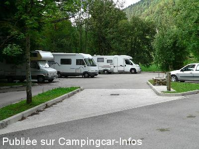
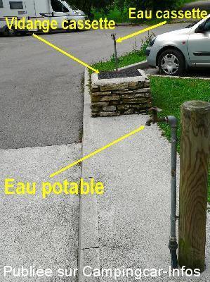
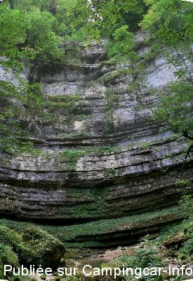
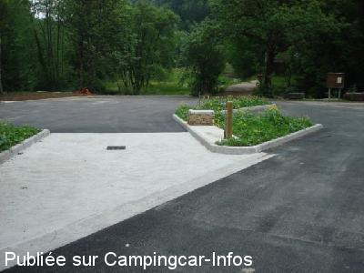

ASN = Aire de services avec stationnement nuit possible de :
CONSOLATION MAISONNETTES
(N° 662)
Accès/adresse :
Parc du Séminaire du Cirque de Consolation
25390 CONSOLATION MAISONNETTES
25390 CONSOLATION MAISONNETTES
Latitude : (Nord) 47.15872° Décimaux ou 47° 9′ 31′′
Longitude : (Est) 6.60606° Décimaux ou 6° 36′ 21′′
Tarif : 2015
C-C, emplacement, services, électricité : 10 €
Adulte : 5 €
Enfant : 2,50 €
Paiement à l'accueil
Services C-C de passage : 5 €
Type de borne : Artisanale
Services :


Sur place visite des jardins du séminaire
Musées
Boutique de souvenirs
Buvette, crêpes, boissons
Vente de pain bio fait sur place
Autres informations :
5 emplacements, en bordure du torrent
Borne avec 4 prises électriques
Services contre 20 € de caution ou dépôt de la Carte Nationale d'Identité, l'accueil vous confiera les clés
http://www.artisansdepaixvdc.org/

Le 01/09/2013 par jipe

Le 01/09/2013 par jipe

Le 01/09/2013 par jipe

Le 21/06/2010 par superpapy612
de
SIMONIN Jean
le 16/11/2013 :
de passage le 12/11/2013 pour une nuit ,nous sommes restés une nuit de plus vu la beauté du site et la gentillesse des responsables de l'association qui nous ont ravitaillé en eau a l'intérieur du monastère alors que l'alimentation en eau potable sur l'aire était hors gel.Je comfirme le tarif de 8euros par 24hrs.Aire a recommander
de passage le 12/11/2013 pour une nuit ,nous sommes restés une nuit de plus vu la beauté du site et la gentillesse des responsables de l'association qui nous ont ravitaillé en eau a l'intérieur du monastère alors que l'alimentation en eau potable sur l'aire était hors gel.Je comfirme le tarif de 8euros par 24hrs.Aire a recommander
de
jipe
le 01/09/2013 :
25/08/2013
Après passage, mise à jour de la fiche et du tarif qui a changé.
Le site est géré par une association. Nos paiements lui permettent de rénover les bâtiments, le parc et de conserver ce lieu en bon état.
Nuitée dans le grand calme
25/08/2013
Après passage, mise à jour de la fiche et du tarif qui a changé.
Le site est géré par une association. Nos paiements lui permettent de rénover les bâtiments, le parc et de conserver ce lieu en bon état.
Nuitée dans le grand calme
de
GM
le 25/07/2013 :
Nous y avons dormi 2 nuits début juillet 2013 et nous avons beaucoup aimé.
En fait c'est aussi un petit camping (WC - douche chaude)tenu par les partisans de la paix. On peut y commander du pain (bon pain au levain) Sinon pas de commerce à proximité.Très belle rivière où on a pu y observer des truites sauvages.
Très calme.
Toujours 5 euros : électricité, eau (et même douche)wc (avec PQ) Ce n'est vraiment pas cher.
Nous y avons dormi 2 nuits début juillet 2013 et nous avons beaucoup aimé.
En fait c'est aussi un petit camping (WC - douche chaude)tenu par les partisans de la paix. On peut y commander du pain (bon pain au levain) Sinon pas de commerce à proximité.Très belle rivière où on a pu y observer des truites sauvages.
Très calme.
Toujours 5 euros : électricité, eau (et même douche)wc (avec PQ) Ce n'est vraiment pas cher.
de
JPS.68
le 08/08/2011 :
§ Bonjour
Toujours aussi calme
Le tarif est de 5€ l'emplacement avec electricité 16A et eau,vidange
et 3€ par personne avec accès au parc
§ Bonjour
Toujours aussi calme
Le tarif est de 5€ l'emplacement avec electricité 16A et eau,vidange
et 3€ par personne avec accès au parc
de
BABAR59
le 14/11/2010 :
L'électricité est à présent installée (borne avec 4 branchements permanents) : l'endroit est toujours aussi calme et propice à de belles ballades
Babar59
L'électricité est à présent installée (borne avec 4 branchements permanents) : l'endroit est toujours aussi calme et propice à de belles ballades
Babar59
de
herremans willy
le 03/06/2010 :
Beaucoup de changement sur ce parking : une plateforme pour vidange eaux usées, une vidange pour la cassette wc et 2 robinet pour l'eau et bientot
de l'électricite, le tout pour 5€ pour 24H. Il faut demander les clés à l'accueil. Parking très calme la nuit.
Beaucoup de changement sur ce parking : une plateforme pour vidange eaux usées, une vidange pour la cassette wc et 2 robinet pour l'eau et bientot
de l'électricite, le tout pour 5€ pour 24H. Il faut demander les clés à l'accueil. Parking très calme la nuit.
de
babar 59
le 05/11/2006 :
De passage ce 1er novembre 2006, nous y sommes finalement restés 2 jours : calme absolu, cadre superbe et pittoresque - stationnement le long d'un petit torrent - sol tarmac plat - redevance 3 € à payer à l'accueil du séminaire - possibilité de commander (la veille) du pain frais. Au niveau technique : comme signalé, pas de borne mais possibilité de se brancher sur un robinet des toilettes pour faire le plein d'eau propre. Pour les WC, possibilité de se servir des WC se trouvant dans les mêmes toilettes. Pas de vidange des eaux usées.
Pour l'électricité, 1 prise dans la petite cabane en bois de l'autre côté du pont mais distance +- 70 m.
De passage ce 1er novembre 2006, nous y sommes finalement restés 2 jours : calme absolu, cadre superbe et pittoresque - stationnement le long d'un petit torrent - sol tarmac plat - redevance 3 € à payer à l'accueil du séminaire - possibilité de commander (la veille) du pain frais. Au niveau technique : comme signalé, pas de borne mais possibilité de se brancher sur un robinet des toilettes pour faire le plein d'eau propre. Pour les WC, possibilité de se servir des WC se trouvant dans les mêmes toilettes. Pas de vidange des eaux usées.
Pour l'électricité, 1 prise dans la petite cabane en bois de l'autre côté du pont mais distance +- 70 m.